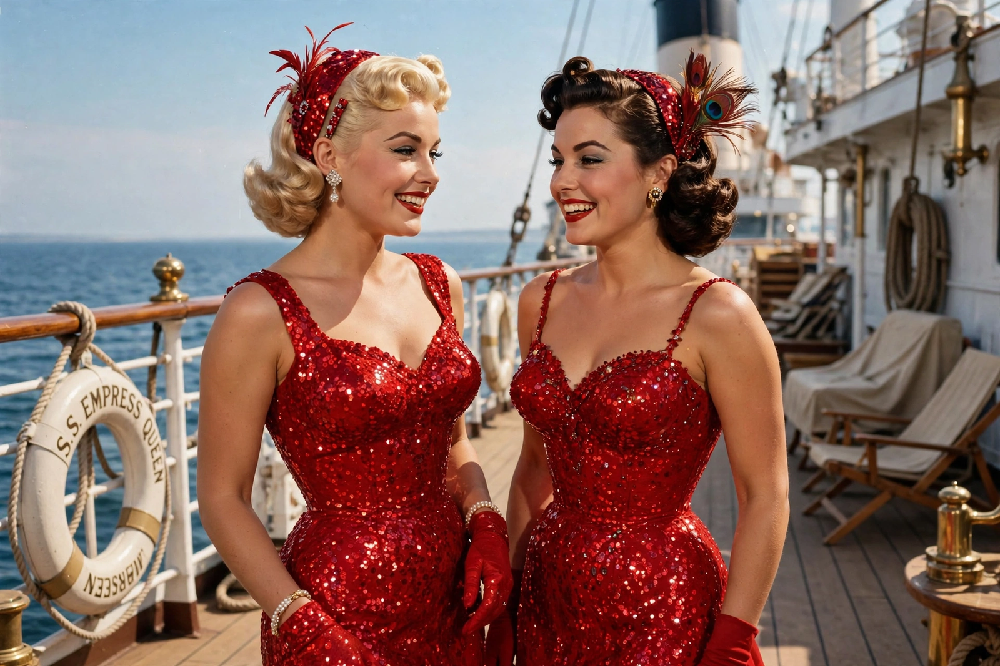

Gentlemen Prefer Blondes
| Gentlemen Prefer Blondes | |
|---|---|
 | |
| Directed by | Howard Hawks |
| Starring | Jane Russell; Marilyn Monroe |
| Released | July 1, 1953 |
| Studio | 20th Century Fox |
| Based on | The 1949 Broadway musical; 1925 novel by Anita Loos |
Gentlemen Prefer Blondes is a 1953 American musical comedy film directed by Howard Hawks and starring Jane Russell and Marilyn Monroe. Based on the 1949 Broadway musical, itself adapted from Anita Loos's 1925 comic novel, it follows two showgirls, Lorelei Lee (Monroe) and Dorothy Shaw (Russell), who sail to Paris pursued by a private detective hired by Lorelei's fiancé's suspicious father. The film is regarded as a high point of Monroe's career and a classic of the Golden Age of Hollywood.
Plot
Showgirls and best friends Lorelei Lee, who is fixated on marrying for money, and Dorothy Shaw, who prefers love, board an ocean liner for France, where Lorelei is to wed millionaire Gus Esmond. Gus's father has hired detective Ernie Malone to watch her; Malone instead falls for Dorothy. In Paris, a compromising episode involving a diamond tiara owned by Sir Francis "Piggy" Beekman threatens the engagement, but after comic courtroom manoeuvres — including Dorothy impersonating Lorelei — the film ends with a double wedding aboard the ship.
Music
The score, drawing on songs by Jule Styne and Leo Robin with additional material by Hoagy Carmichael and Harold Adamson, includes "Diamonds Are a Girl's Best Friend," performed by Monroe in a pink satin gown surrounded by dancers in top hats — one of the most imitated musical numbers in film history, famously recreated by Madonna in the "Material Girl" video. Other numbers include "Bye Bye Baby," "A Little Girl from Little Rock," and Russell's showpiece "Ain't There Anyone Here for Love?", performed among Olympic athletes.
Legacy
The film consolidated Monroe's image as the archetypal "blonde bombshell" while showcasing her comic timing, and it helped make her a defining cultural icon of the 1950s. A sequel, Gentlemen Marry Brunettes (1955), again starred Russell. Monroe followed it with successes including The Seven Year Itch (1955).